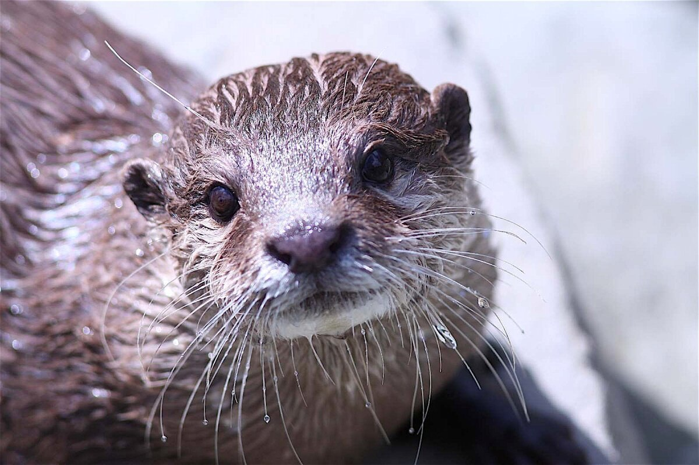

Зоопарк

Крокоди́лы (лат. Crocodilia) — отряд вторично-водных животных класса пресмыкающихся из клады эузухий, которая в свою очередь вместе со множеством промежуточных клад относится к кладе круротарзы или псевдозухии. Из ныне живущих организмов ближайшие родственники крокодилов — птицы, потомки сестринской ветви архозавров. Хотя словом «крокодил» правильнее всего обозначать представителей семейства настоящих крокодилов, в целом этот термин употребим для обозначения любых представителей отряда, к которому также относятся семейства аллигаторовые (аллигаторы и кайманы) и гавиаловые, а также некоторые базальные его представители. Нередко «крокодилами» называют любых крокодиломорфов (Crocodylomorpha), что является ошибкой на фоне современной систематики данной группы рептилий. В современном объёме данной систематической группы, крокодилы впервые появились 83,5 млн лет назад в позднем меловом периоде. Современный отряд включает в себя не менее 15 видов настоящих крокодилов (семейство Crocodylidae), 8 видов аллигаторовых (семейство Alligatoridae) и 2 вида гавиаловых (семейство Gavialidae, иногда упраздняемое до подсемейства в составе семейства настоящих крокодилов).
больше о крокодилах
Ено́т-полоску́н, или америка́нский енот (лат. Procyon lotor), — хищное млекопитающее рода еноты семейства енотовых. Один из немногих видов, которые процветают в условиях усиления антропогенного воздействия, выражающегося в постепенном окультуривании угодий. Енот хорошо приживается в местах интродукции, хотя и является в целом теплолюбивым видом. На территории России вид хорошо освоил западные (причерноморские) и восточные (прикаспийские) регионы Северного Кавказа, где превратился в опасный инвазионный вид, угрожающий местной флоре и фауне. B Беларуси хорошо прижился в Полесье. Енот легко приручается и подходит для разведения в неволе.
больше о енотах
